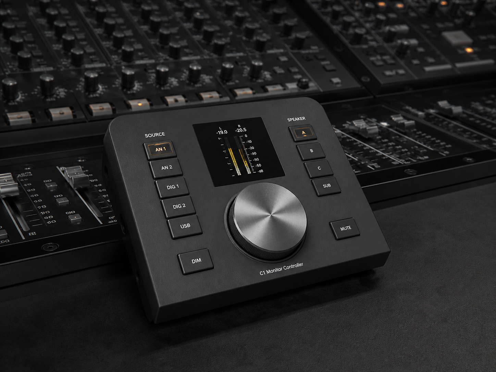

One standard.
Every decision.
Professional monitoring, conversion and control; reference listening products; technology that remains accountable in the room.
 AAP-A1 / A-Series
AAP-A1 / A-SeriesA1 Nearfield Monitor
Truth, at working distance.
 AAP-A3 / A-Series
AAP-A3 / A-SeriesA3 Nearfield Monitor
Nearfield precision. Midfield authority.
 AAP-M3 / M-Series
AAP-M3 / M-SeriesM3 Main Monitor
Scale without uncertainty.
 AAP-SB8 / Signal Bridge
AAP-SB8 / Signal BridgeSignal Bridge 8
Conversion without drama.

AAP-C1 / ControlC1 Monitor Controller
Every route, visible.
 AAP-H1 / Reference
AAP-H1 / ReferenceH1 Reference Headphones
A room you can carry.
 AAP-R1 / Reference
AAP-R1 / ReferenceR1 Reference Monitor
Professional judgement, at home.
 AAP-D1 / Reference
AAP-D1 / ReferenceD1 Reference DAC
The quiet between numbers.